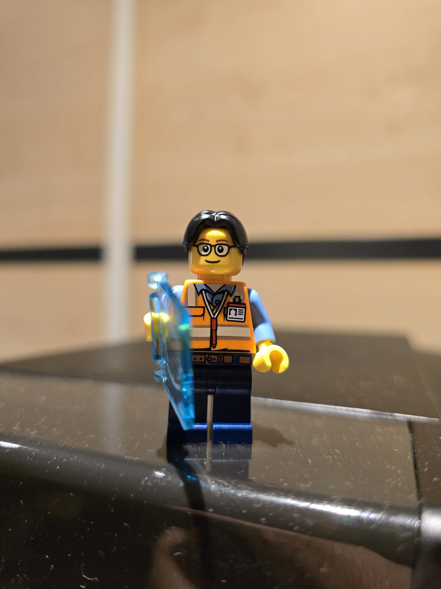
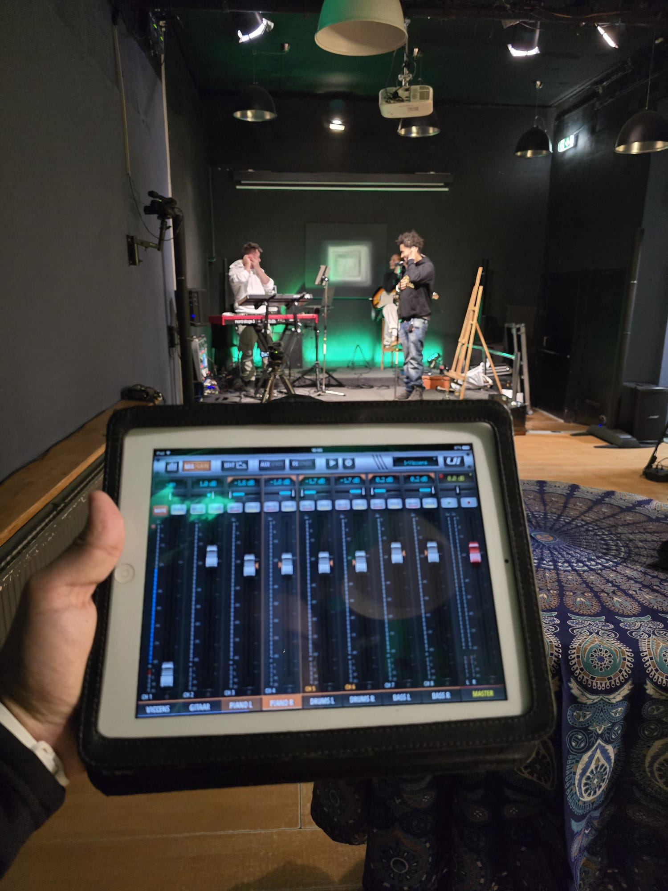
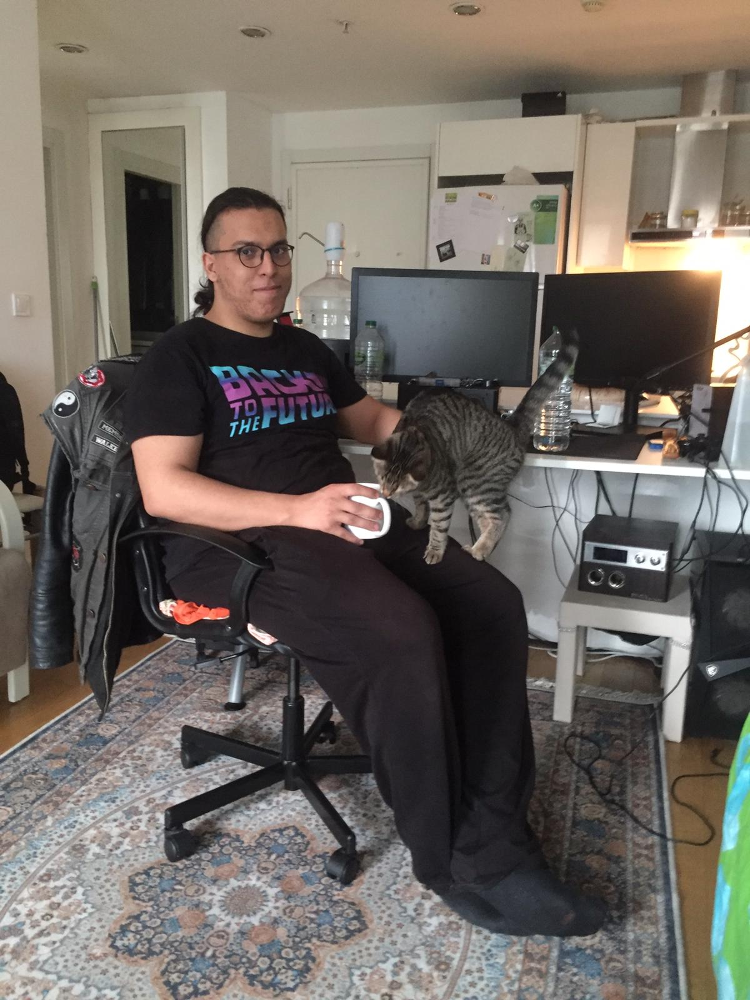

💻 Computer Engineer · Automation, Networking & Test Engineering
📍 Zoetermeer · yusufk.isik@gmail.com
📥 Open CVAbout Me
I graduated from Bahçeşehir University with a 100% merit-based scholarship in Computer Engineering. I currently work as a Junior Engineer at a Cisco partner, focusing on automation and network systems.
🛠️ Technical Skills
🐍 Python 🧪 Test Automation 🤖 Machine Learning ♯ C# ☁️ Azure 🐧 Linux 🌐 Networking 🛜 Field WorkTechnological Stack

Cisco Live 2025

Network Config

Sound Design

Private Psychological Help 🐈
🏢 Reconext · Junior Engineer
📅 2023 - 2026
- 🔧 Resolved 400+ engineering issues across Cisco product families
- ⚙️ Designed and implemented NPI test automation framework for 8 product lines
- 🌐 Automated network line setup & validation, reducing configuration errors
- 📚 Created technical documentation and training materials for internal teams
🎓 Education
💻 BSc Computer Engineering
🏫 Bahçeşehir University (2018–2023)
🎯 Graduation thesis: 3D Material Printer with STL → GCode parser
📜 Certifications
- ☁️ Microsoft Certified: Azure Data
Fundamentals
ID: I584-8335 - 🛡️ SOG-P (Safety for Operational Supervisors)
- 🚑 BHV (Emergency Response Officer)
- 🏗️ VCA (Safety Checklist Contractors)
- 🚗 Rijbewijs B
- 🛒 EPT